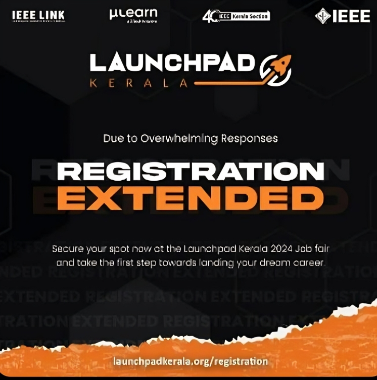

Introduction
Welcome to a transformative journey with IEEE Launchpad Kerala 2024 in association with GTECH Mulearn, where each task is not just a challenge but a golden ticket to the Launchpad Jobfair. We've designed these tasks to sharpen your skills and deepen your understanding, aligning perfectly with what top companies are seeking. This isn’t just about learning; it’s about proving your prowess in a competitive, task-driven landscape.
As you conquer each milestone, you're not only mastering the tools and practices essential for development but also building a portfolio of proof-of-work that sets you apart in the Proof of Work Pavilion for job shortlisting. Employers today crave not just knowledge, but demonstrated ability — your journey through these tasks is your chance to show you’re ready to hit the ground running.
Embrace this opportunity to stand out, to shine in front of industry leaders looking for talent that can learn, adapt, and implement. Let’s dive into this adventure, where your dedication and efforts directly link to exciting job prospects at the Launchpad Jobfair. Begin now, and let each task be a step toward securing your future in the tech world!
Call to Action
Join IEEE Launchpad Kerala today and embark on a journey towards success. Exciting News! Registrations are live now. For further updates you can visit our website
Latest Updates
Exciting News! We've launched our official Discord channel for IEEE LaunchPad Kerala! Join us to connect with like-minded individuals, participate in discussions, and stay updated on upcoming events and opportunities.
Event Roadmap
Get a sneak peek into our upcoming events and activities. Plan your journey with us!
- 📅 21-Day Challenge (Starting from April 10th)
- 📝 Online Test
- 🎙️ Interview (Based on your Performance in the challenge and Test)